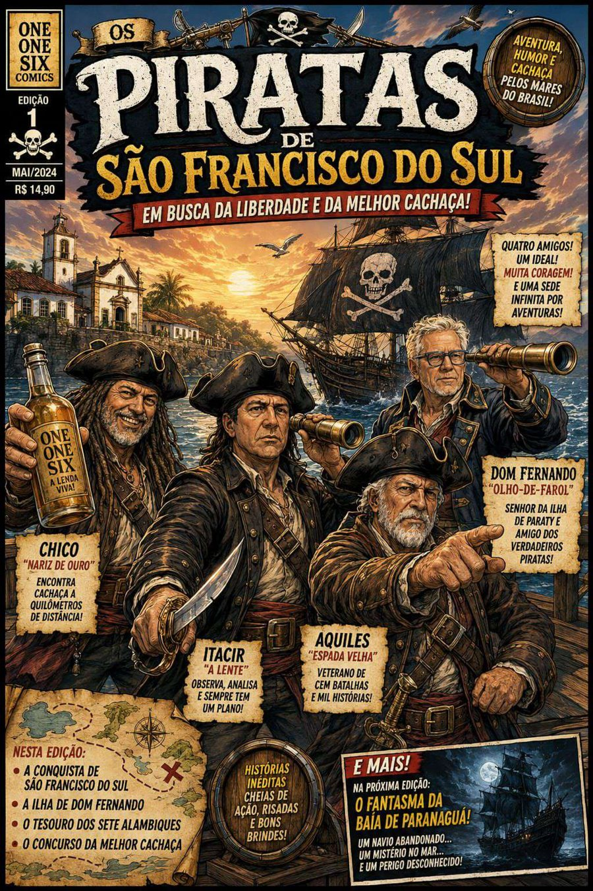

EDIÇÃO Nº 1 · 12 PÁGINAS
Os Piratas de
São Francisco do Sul
Em busca da liberdade e da melhor cachaça!

Deslize sobre a revista ou use as setas para folhear.
EDIÇÃO Nº 1 · 12 PÁGINAS
Em busca da liberdade e da melhor cachaça!

Deslize sobre a revista ou use as setas para folhear.